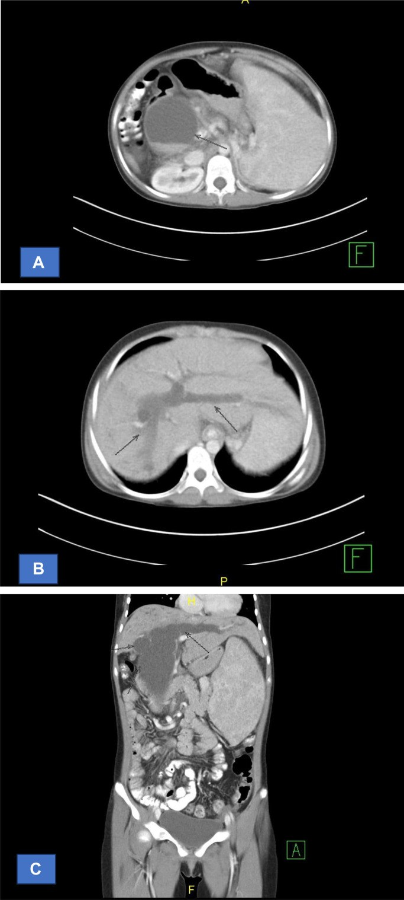
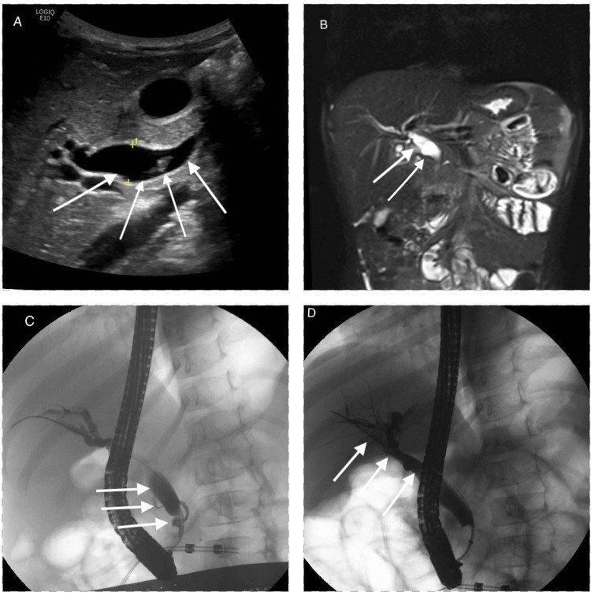
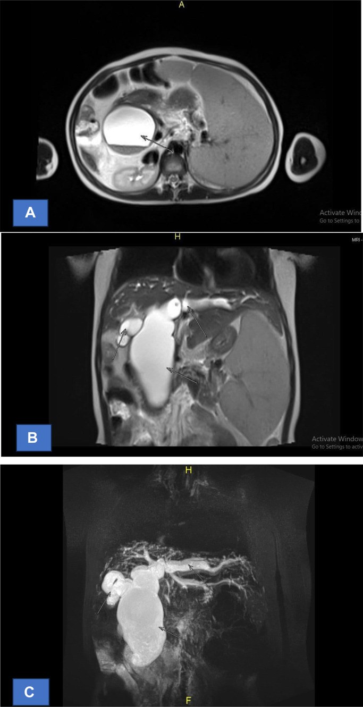
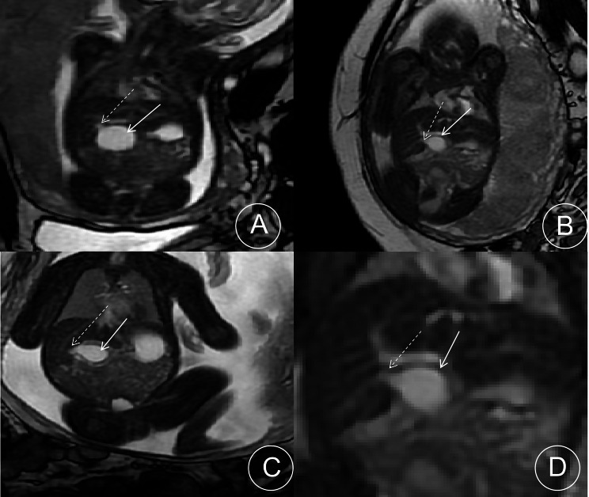

6137 — Nang ống mật chủ ở trẻ: phân loại Todani, MRCP trước mổ, nguy cơ ung thư và theo dõi sau nối mật–ruột
Tags: pattern:nang pattern:hep-duong-mat pattern:gian-duong-mat vung:duong-mat vung:gan vung:thai-nhi protocol:SA-bung protocol:MRI-MRCP protocol:CT-bung score:Todani incidentaloma:khong
Mức chắc chắn (certainty): tổng hợp y văn (literature synthesis) — ghép ca trẻ 6 tuổi có ảnh US/MRI/ERCP (Cureus 2025, PMC12081121), ca 16 tuổi Todani IV có ảnh CT/MRCP (Radiol Case Rep 2025, PMC11570900), 31 thai nhi có MRI (BMC Med Imaging 2026, PMC13366937), 319 trẻ < 60 ngày phân biệt nang ống mật chủ với teo đường mật thể nang (World J Gastroenterol 2025, PMC12418004), tổng quan phân loại Todani (Diagnostics 2023, PMC10047054), phân tích gộp nguy cơ ung thư 18 nghiên cứu/2.904 bệnh nhân (Br J Surg 2018, PMC5900735), 457 trẻ sau mổ (Sci Rep 2025, PMC11914202), phân tích gộp robot vs nội soi 19 nghiên cứu (Front Pediatr 2026, PMC13160894).
Câu hỏi thực hành: bé gái 6 tuổi, đau bụng lan tỏa 1 tuần, nôn; lipase 3.197 U/L, AST 317, ALT 682 U/L, bilirubin toàn phần 1,4 mg/dL. Siêu âm: tụy to, phù quanh tụy, sỏi túi mật, ống mật chủ 11 mm. Bác sĩ hỏi: đây là viêm tụy do sỏi hay có gì khác, cần chụp gì trước mổ, và nếu là nang ống mật chủ thì mổ khi nào, theo dõi bao lâu? Bài chốt bốn việc: (1) nang ống mật chủ (choledochal cyst) là giãn đường mật bẩm sinh, thường gặp ở bé gái châu Á, và là "kẻ bắt chước" của viêm tụy tái phát — phải nghĩ tới khi ống mật chủ giãn kèm viêm tụy; (2) MRCP là chuẩn chẩn đoán (độ nhạy 90–100%) và là bắt buộc trước mổ để xếp Todani I–V — phân loại quyết định kiểu mổ; (3) điều trị là cắt toàn bộ nang + nối mật–ruột Roux-en-Y, không dẫn lưu nang (dẫn lưu làm tăng nguy cơ ung thư 4 lần); trẻ không triệu chứng có thể hoãn mổ tới 3–6 tháng tuổi, nhưng teo đường mật thể nang phải mổ trong 60 ngày; (4) ung thư đường mật vẫn có thể xuất hiện sau cắt nang — tích lũy 1,6% ở 15 năm, 3,9% ở 20 năm, 11,3% ở 25 năm — nên theo dõi suốt đời, không phải "mổ xong là khỏi".
1. Tổng quan bệnh học – cơ chế hình ảnh: tại sao nang lại "ăn" vào đường mật và sinh ung thư
- Dịch tễ (số phải nhớ): 1/100.000–1/150.000 trẻ sinh sống ở phương Tây; 1/13.500 ở Mỹ, 1/15.000 ở Úc, và tới 1/1.000 ở châu Á — 2/3 ca châu Á ở Nhật (PMC10047054). Nữ:nam 3–4:1; 20–25% chỉ được chẩn đoán ở tuổi trưởng thành; ~80% được chẩn đoán trong thập niên đầu đời (PMC11570900). Nang ống mật chủ là dị tật đường mật bẩm sinh phổ biến thứ hai sau teo đường mật (PMC10047054). Teo đường mật: 1,1–1,48/10.000 trẻ sinh sống; thể nang (cystic biliary atresia, CBA) chiếm ~10% teo đường mật (PMC12418004).
- Cơ chế chính — bất thường nối mật–tụy (anomalous pancreaticobiliary junction, APBJ): ống mật chủ và ống tụy chính hợp lưu quá cao, phía trên cơ vòng Oddi, tạo kênh chung dài. Vì chênh áp lực, dịch tụy trào ngược vào đường mật; elastase và phospholipase A2 phá hủy biểu mô, gây viêm mạn, giãn thành ống mật và xơ hóa. Hệ quả: (a) thành nang mất biểu mô trụ bình thường → sỏi bùn, viêm đường mật, viêm tụy tái phát; (b) biểu mô bị kích thích lâu năm → dị sản → loạn sản → ung thư biểu mô đường mật. APBJ gặp chủ yếu ở Todani IA, IC và IVA (PMC10047054).
- TẠI SAO MRCP là chuẩn (vật lý): MRCP dùng chuỗi T2 rất nặng (heavily T2-weighted) — dịch mật T2 rất sáng, mô đặc và mạch máu tối, nên toàn bộ cây đường mật hiện ra như "phim âm bản" mà không cần thuốc cản quang. Độ nhạy 90–100% cho nang ống mật chủ (PMC12081121), và quan trọng hơn siêu âm ở chỗ thấy được APBJ và ống mật trong gan — hai thứ quyết định phân loại và kiểu mổ.
- TẠI SAO siêu âm vẫn là bước đầu: không bức xạ, rẻ, làm được tại giường, thấy nang, sỏi, giãn ống mật trong gan và dịch quanh tụy. Nhưng siêu âm không thấy APBJ và không phân biệt tốt nang nhỏ với teo đường mật thể nang — nên không dùng siêu âm một mình để quyết định mổ.
- TẠI SAO phân loại quan trọng hơn kích thước: kiểu mổ khác nhau theo Todani — I/IV: cắt nang + nối gan–ruột Roux-en-Y; II: cắt túi thừa; III (choledochocele): cắt qua nội soi + cắt cơ vòng; V (Caroli): cắt gan từng phần/ghép gan. Nang "không xếp loại được" (type ID, type VI) đã được báo cáo nhiều, nên phân loại là công cụ, không phải chân lý (PMC10047054).
- Số liệu phân bố Todani (dùng để kiểm tra trước mổ): type I 50–80%, type IV 12–35%, type III 1,4–4,5%, type II 2–3%, type V tới 20% trong một số tổng quan (PMC10047054). Nếu MRCP báo "type IV" mà không thấy giãn ống mật trong gan, phải xem lại — và ngược lại.
- Nguy cơ ung thư (số quyết định theo dõi): phân tích gộp 18 nghiên cứu, 2.904 bệnh nhân: 312 người (10,7%) có ung thư; tỉ lệ hiện mắc 7,3%, tỉ lệ chuyển dạng ác tính 3,4%; type I và IV nguy cơ cao hơn (p = 0,016); dẫn lưu nang (cystic drainage) làm tăng nguy cơ so với cắt toàn bộ: OR 3,97 (2,40–6,55) (PMC5900735). Sau cắt nang, nguy cơ vẫn còn: tích lũy 1,6% ở 15 năm, 3,9% ở 20 năm, 11,3% ở 25 năm, xuất hiện ở 13, 15, 23 và 32 năm sau mổ; ung thư sau mổ có sống trung vị 15 tháng (PMC3816325).
- Biến chứng sau mổ (số phải nhớ): loạt nội soi ở trẻ 34/362 (9,39%) có biến chứng; trong số đó hẹp miệng nối mật–ruột 35,3%, sỏi đường mật 23,5%, viêm tụy 20,6%; yếu tố nguy cơ độc lập: thành nang > 5 mm OR 4,23, viêm túi mật mạn OR 6,42, Todani I OR 6,13, CRP tăng OR 1,52, bilirubin trực tiếp tăng OR 2,05 (PMC13181631). Ở 457 trẻ sau mổ: sỏi đường mật trong gan 21 ca (4,6%), 81% trong số đó là type IVa; 4 ca do hẹp miệng nối; đường kính miệng nối lớn hơn ở nhóm có sỏi (15,0 vs 8,0 mm, p = 0,03) — gợi ý miệng nối quá rộng + ứ trệ là cơ chế (PMC11914202).
2. Mẫu hình + chẩn đoán phân biệt theo Todani và theo tuổi (gamut)
- Mẫu hình theo Todani (gamut chính):
- Type I (50–80%) — giãn ống mật chủ ngoài gan: IA = giãn dạng nang toàn bộ ống mật ngoài gan; IB = giãn một đoạn; IC = giãn dạng thoi (fusiform) toàn bộ ± ống mật trong gan. Hay kèm APBJ.
- Type II (2–3%) — túi thừa của ống mật chủ, có cuống; dễ nhầm với nang ống mật chủ kiểu I nhỏ hoặc nang tá tràng.
- Type III (1,4–4,5%) — choledochocele: giãn đoạn cuối ống mật chủ trong thành tá tràng, thường tắc bóng Vater → viêm tụy/viêm đường mật; điều trị nội soi cắt cơ vòng là lựa chọn.
- Type IV (12–35%) — IVA: giãn cả trong và ngoài gan; IVB: nhiều đoạn giãn chỉ ngoài gan. Nguy cơ sỏi trong gan và ung thư cao nhất → theo dõi sát nhất.
- Type V (Caroli) — giãn chỉ ống mật trong gan, ± xơ gan bẩm sinh (Caroli syndrome); nguy cơ sỏi trong gan, viêm đường mật, ung thư; điều trị cắt gan/ghép gan.
- Gamut theo tuổi (cách trình bày): sơ sinh–< 1 tuổi:** vàng da ứ mật, phân bạc màu, khối hạ sườn phải; **1–10 tuổi:** đau bụng tái diễn, **viêm tụy**, viêm đường mật; **> 10 tuổi–người lớn: đau bụng ± sốt ± vàng da, đôi khi ung thư đường mật là triệu chứng đầu. Tam chứng kinh điển (đau + vàng da + khối) chỉ có ở ~20%, nhưng 85% trẻ có 2 trong 3 triệu chứng, so với 25% người lớn (PMC11570900).
- Chẩn đoán phân biệt bắt buộc (theo hình ảnh):
- Teo đường mật thể nang (CBA) — nang nhỏ ở rốn gan, phải mổ trong 60 ngày; phân biệt bằng kích thước nang + GGT + acid mật (xem mục 3).
- Nang ống mật chủ "forme fruste"/type ID/type VI — bất thường nối mật–tụy không có giãn rõ hoặc giãn ở ngã ba ống gan; dễ bị bỏ qua (PMC10047054).
- Nang giả tụy (pseudocyst) — không có biểu mô lót, tiền sử viêm tụy, nằm sau dạ dày/trước thận, không thông với cây đường mật.
- Nang lặp lại đường tiêu hóa (duplication cyst), nang gan đơn thuần, nang màng phổi dưới hoành, nang thận — dựa vào vị trí và không thông với đường mật.
- Túi mật căng nước/trùng lặp túi mật — không thấy ống mật chủ giãn, có cổ túi mật.
- Sỏi ống mật chủ đơn thuần — giãn nhẹ, không có nang, có sỏi; nhưng sỏi ở trẻ phải nghĩ nang ống mật chủ/APBJ (ca 6 tuổi dưới đây vừa sỏi vừa nang).
3. Bảng so sánh phân biệt (ma trận đối chiếu)
| Thực thể (entity) | Hình ảnh điển hình (US/MRCP/CT) | Chốt vào (rule-in) | Chốt loại (rule-out) | Gợi ý xác nhận |
|---|---|---|---|---|
| Nang ống mật chủ type I | Nang/fusiform ống mật chủ, thông với ống gan; MRCP thấy toàn bộ cây đường mật; ± sỏi | Nang đường mật thông với ống gan + ống mật trong gan bình thường; LDC trung vị 4,3 cm ở trẻ < 60 ngày (PMC12418004) | Nang không thông đường mật → nghĩ nang lặp lại/nang gan | MRCP; ERCP chỉ khi cần can thiệp |
| Type IVa | Giãn cả trong và ngoài gan, nhiều đoạn | Giãn ống mật trong gan + ngoài gan, thường sỏi trong gan | Chỉ giãn ngoài gan → type I; chỉ trong gan → type V | MRCP; theo dõi sỏi trong gan lâu dài |
| Teo đường mật thể nang (CBA) | Nang nhỏ rốn gan, túi mật xẹp, không thấy ống mật chủ bình thường | LDC 1,9 cm vs 4,3 cm, TDC 1,4 vs 3,2 cm, GGT 482 vs 296,5 U/L, acid mật 91,4 vs 16 µmol/L (CC); mô hình AUC 0,990, Se 92,9%, Sp 96,3% | Nang > 3 cm + GGT thấp gần như loại trừ CBA nhưng không tuyệt đối | HIDA (không thấy phóng xạ vào ruột) + mổ trong 60 ngày nếu nghi CBA |
| Nang giả tụy | Nang sau dạ dày, thành mỏng, không có biểu mô, dịch tụy; tiền sử viêm tụy | Tiền sử viêm tụy + nang không thông đường mật + amylase dịch cao | Thông với đường mật → không phải pseudocyst | MRI/CT; theo dõi ≥ 4 tuần (bài 6135) |
| Nang lặp lại tiêu hóa | Nang thành có lớp cơ/niêm mạc, dính tá tràng, không thông đường mật | Thành dày có lớp + không thông mật | Thông với ống mật → nang ống mật chủ | MRI + mô bệnh sau mổ |
| Túi mật căng nước/trùng lặp | Túi mật to, không thấy cổ, ống mật chủ không giãn | Có cổ túi mật + ống mật chủ bình thường | Có nang ống mật chủ thật → không phải túi mật | Siêu âm + MRCP |
| Sỏi ống mật chủ | Ống mật chủ giãn nhẹ, sỏi trong lòng, không nang | Sỏi + giãn nhẹ, không có nang | Nang/fusiform > 1 cm → nang ống mật chủ | MRCP; ở trẻ luôn tìm APBJ/nang |

CT 16 tuổi, Todani IV: (A) giãn ống mật chủ ngoài gan; (B) giãn ống mật trong gan hai bên; (C) coronal thấy toàn bộ hệ thống giãn. Nguồn: Radiol Case Rep 2025 (PMC11570900), CC BY 4.0.4. Protocol chụp + phân loại + chỉ định mổ
- Bước 1 — siêu âm bụng (nhịn ăn 3–4 giờ): đo đường kính nang theo trục dọc và ngang, tìm sỏi, giãn ống mật trong gan, túi mật, dịch quanh tụy. Ở thai: siêu âm là bước đầu, MRI thai khi cần chẩn đoán xác định.
- Bước 2 — MRCP (bắt buộc trước mổ): chuỗi T2 nặng 3D, không cản quang; đánh giá toàn bộ cây đường mật, APBJ, ống gan, ống tụy, và phân loại Todani. Độ nhạy 90–100% (PMC12081121). Nếu trẻ quá nhỏ/không hợp tác: MRI dưới mê hoặc MRCP sau bơm secretin (không bắt buộc).
- Bước 3 — CT bụng có cản quang: không thường quy; dùng khi nghi biến chứng (vỡ nang, viêm tụy hoại tử, áp-xe) hoặc không làm được MRI; CT tốt cho type IV/V và quy hoạch mổ (PMC11570900).
- Bước 4 — HIDA (Tc-99m): hữu ích ở sơ sinh để phân biệt nang ống mật chủ với teo đường mật (không thấy phóng xạ xuống ruột trong teo đường mật); không thay thế MRCP.
- Bước 5 — ERCP: chẩn đoán ít dùng (xâm lấn); điều trị type III (cắt cơ vòng), lấy sỏi, đặt stent khi viêm đường mật nặng; không dùng để "dẫn lưu nang" vì làm tăng nguy cơ ung thư (OR 3,97, PMC5900735).
- Thời điểm mổ: trẻ không triệu chứng: hoãn tới 3–6 tháng tuổi (PMC12418004); có triệu chứng/viêm tụy/viêm đường mật: mổ sớm sau khi ổn định; nghi teo đường mật thể nang: mổ trong 60 ngày.
- Kiểu mổ: cắt toàn bộ nang + nối gan–ruột Roux-en-Y (hepaticojejunostomy) là chuẩn cho type I/IV. Type II: cắt túi thừa. Type III: cắt qua nội soi ± cắt cơ vòng. Type V: cắt gan từng phần/ghép gan. Nối mật–tá tràng (hepaticoduodenostomy) là lựa chọn thay thế nhưng còn tranh luận: nguy cơ trào ngược dịch tá tràng/viêm đường mật được nêu, trong khi bằng chứng so sánh trực tiếp chưa kết luận (PMC11546063).
- Theo dõi sau mổ (suốt đời): siêu âm + men gan + GGT mỗi 6–12 tháng; MRCP khi nghi hẹp miệng nối/sỏi; CA 19-9 không đủ để sàng lọc nhưng dùng khi nghi ung thư; nội soi/ERCP khi hẹp miệng nối có triệu chứng.
flowchart TD
A[Nang/giãn đường mật trên siêu âm] --> B[MRCP: cây đường mật + APBJ]
B --> C{Todani type?}
C -->|I hoặc IV| D[Cắt nang + Roux-en-Y hepaticojejunostomy]
C -->|II| E[Cắt túi thừa]
C -->|III| F[Cắt qua nội soi ± cắt cơ vòng]
C -->|V| G[Cắt gan từng phần hoặc ghép gan]
D --> H{Trẻ dưới 3 tháng và không triệu chứng?}
H -->|Có| I[Hoãn mổ tới 3–6 tháng tuổi]
H -->|Không| J[Mổ sau khi ổn định]
A --> K{Nang nhỏ dưới 2 cm ở sơ sinh?}
K -->|Có| L[Phân biệt teo đường mật thể nang: GGT, acid mật, HIDA]
L -->|Nghi teo đường mật| M[Mổ trong 60 ngày]
5. Biến thể bình thường và cạm bẫy
- "Nang nhỏ" ở sơ sinh không phải lúc nào cũng là nang ống mật chủ: teo đường mật thể nang có tiên lượng và thời điểm mổ hoàn toàn khác (60 ngày). Dùng kích thước + GGT + acid mật (mục 3); không chờ "nang to lên rồi tính".
- Type ID/type VI "không có trong Todani": giãn ở ngã ba ống gan với ống mật chủ dưới bình thường; MRCP trước mổ có thể báo sai type II — ca 35 tuổi trong PMC10047054 mổ nội soi chuyển mở vì vị trí thực tế khác. Luôn đọc MRCP cùng phẫu thuật viên, và chấp nhận phân loại có thể phải sửa trong mổ.
- Dấu hiệu "pointed apex" trên MRI thai: trong 31 thai nhi, 100% có đỉnh nhọn phía trên, 26/31 hình bầu dục, 29/31 không vượt bờ dưới gan, 26/31 hướng từ trên-phải xuống dưới-trái; 70,9% là thai nữ (PMC13366937). Đây là dấu hiệu gợi ý type I, không phải chẩn đoán mô học — không dùng để loại trừ teo đường mật.
- Nhầm nang ống mật chủ với nang giả tụy: nang giả không có biểu mô, thành mỏng, không thông đường mật; cắt nang giả không cần nối mật–ruột, còn cắt nang ống mật chủ mà không nối mật–ruột là biến chứng chết người (rò mật, hẹp, xơ gan).
- "Đã cắt nang là hết nguy cơ ung thư" — SAI: nguy cơ tích lũy 11,3% ở 25 năm (PMC3816325); ung thư có thể ở ống mật trong gan còn lại, rốn gan, hoặc đoạn trong tụy. Phải theo dõi suốt đời, kể cả khi mổ lúc còn nhỏ.
- Dẫn lưu nang/đặt stent "tạm" rồi quên: dẫn lưu nang làm tăng nguy cơ ung thư OR 3,97 so với cắt toàn bộ (PMC5900735) — chỉ dùng như cầu nối ngắn khi viêm đường mật nặng, và phải có kế hoạch cắt nang.
- Miệng nối "càng rộng càng tốt" — SAI: ở 457 trẻ, miệng nối lớn hơn ở nhóm có sỏi trong gan (15,0 vs 8,0 mm, p = 0,03) — gợi ý ứ trệ + trào ngược; kích thước miệng nối phải vừa với ống gan, không phải tối đa (PMC11914202).
6. Tự lượng giá — Blind Quiz
Ca 1 — Bé gái 6 tuổi, đau bụng 1 tuần, nôn; lipase 3.197 U/L, ALT 682 U/L.

- Gợi ý: siêu âm thấy ống mật chủ 11 mm và sỏi túi mật; không sốt, không vàng da rõ.
- Hỏi: (1) mô tả 4 bảng ảnh; (2) đây là viêm tụy do sỏi đơn thuần hay có bệnh nền đường mật; (3) bước tiếp theo trước mổ?
Bấm để hiện đáp án (findings + chẩn đoán)
- A (siêu âm): giãn dạng thoi ống mật chủ kèm sỏi/bùn trong lòng (mũi tên trắng).
- B (MRI coronal T2): nang/fusiform ống mật chủ, thấy rõ ống gan đổ vào; APBJ (mũi tên).
- C–D (ERCP): sỏi ống mật chủ (mũi tên), đường mật giãn; ERCP vừa chẩn đoán vừa lấy sỏi.
- Chẩn đoán: nang ống mật chủ type IA + sỏi + viêm tụy cấp — viêm tụy là biến chứng của nang, không phải nguyên nhân gốc.
- Vì sao: sỏi ở trẻ + ống mật chủ giãn = phải loại trừ nang/APBJ; MRCP trước mổ để xếp Todani và quy hoạch cắt nang + nối gan–ruột.
- Nguồn ảnh: Cureus 2025 (PMC12081121), CC BY 4.0.
Ca 2 — Nữ 16 tuổi, đau bụng từng đợt 1 năm, vàng da, sờ thấy khối.
- Hỏi: (1) phân loại Todani; (2) vì sao phải làm MRCP dù đã có CT; (3) nguy cơ dài hạn cần theo dõi?
Bấm để hiện đáp án (findings + chẩn đoán)

- CT: giãn ống mật chủ ngoài gan (A) và ống mật trong gan hai bên (B, C) → Todani IVa.
- MRCP: xác nhận giãn cả trong và ngoài gan, thấy nhánh trong gan và ống tụy; CT không đánh giá đủ APBJ và không mô tả chi tiết ống mật trong gan.
- Điều trị: cắt toàn bộ nang + Roux-en-Y hepaticojejunostomy; không dẫn lưu nang (OR ung thư 3,97).
- Theo dõi: sỏi trong gan (81% số ca sỏi trong gan thuộc type IVa), hẹp miệng nối, và ung thư đường mật — tích lũy 1,6% / 3,9% / 11,3% ở 15 / 20 / 25 năm.
- Nguồn ảnh: Radiol Case Rep 2025 (PMC11570900), CC BY 4.0.
Ca 3 — Thai 30 tuần, siêu âm thấy nang rốn gan; MRI thai được chỉ định.

- Hỏi: (1) dấu hiệu chính trên MRI; (2) chẩn đoán phân biệt quan trọng nhất sau sinh; (3) thời điểm mổ?
Bấm để hiện đáp án
- Dấu hiệu: nang bầu dục, đỉnh nhọn phía trên ("pointed apex sign") ở rốn gan, không vượt bờ dưới gan, hướng trên-phải → dưới-trái (31 thai: 100% có đỉnh nhọn, 70,9% nữ).
- Phân biệt sau sinh: teo đường mật thể nang — nang nhỏ hơn (LDC 1,9 vs 4,3 cm; TDC 1,4 vs 3,2 cm), GGT cao hơn (482 vs 296,5 U/L), acid mật cao hơn (91,4 vs 16 µmol/L).
- Thời điểm: nếu nang ống mật chủ không triệu chứng → có thể hoãn tới 3–6 tháng tuổi; nếu nghi teo đường mật → mổ trong 60 ngày.
- Nguồn ảnh: BMC Med Imaging 2026 (PMC13366937), CC BY-NC-ND 4.0, nguyên bản.
Bài liên quan chéo
- 6135 – Viêm tụy cấp ở trẻ: INSPPIRE, NASPGHAN, ổ dịch theo mốc 4 tuần
- 6136 – Viêm tụy cấp do thuốc ở trẻ
- 135 – Viêm tụy cấp người lớn theo Atlanta
- 136 – U nang tụy
- 6120 – U tụy ở trẻ
- 600 – Tổng quan Nhi khoa
Không dùng để chẩn đoán độc lập khi chưa có người hướng dẫn.